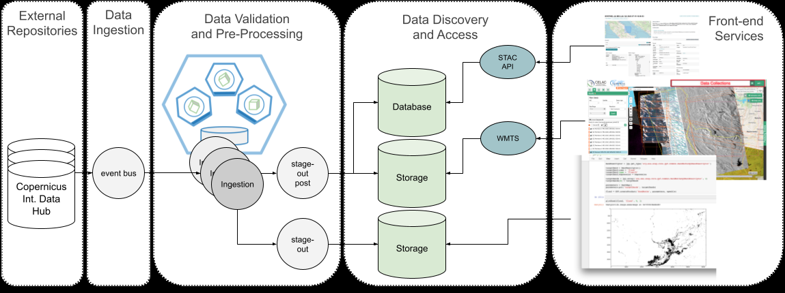

Ingestion Workflow
Siete etapas del workflow —aserción de formato, selección del paquete, validación y preprocesado, extracción de metadatos, enriquecimiento, registro en catálogo y carga en S3— más el tratamiento de errores por nivel de ingesta.
The following diagram illustrates the overall data ingestion workflow, detailing the processes involved in handling metadata-only ingestion, dataset copying, and dataset calibration. These workflows are dynamically tailored based on the specific requirements of each dataset, ensuring efficient and relevant data handling.

The ingestion workflow involves several key stages that adapt to the selected ingestion level:
- Format Assertion: The process begins with ensuring that the ingested data, whether metadata or full datasets, adheres to the platform's accepted formats. For metadata-only ingestion, the platform validates the format of metadata files to ensure compatibility with the STAC specification. For datasets requiring copying or calibration, the platform checks for supported formats (e.g., GeoTIFF, Cloud-Optimized GeoTIFF, or .zip) to maintain standardization. Datasets or metadata that fail to meet these requirements are filtered out at this stage to prevent workflow disruptions.
- Ingestion Application Package Selection: Based on the dataset's ingestion level, the platform selects the appropriate Application Package. This package defines the specific Extract, Transform, Load (ETL) process to be applied. For metadata-only ingestion, the package includes tools for validating metadata and registering it in the catalog. For dataset copying, the ETL process involves additional steps for downloading, validating, and storing the dataset. Calibration workflows include specialized processing tools for transformations such as georeferencing, spatial adjustments, or format conversion. Selecting the correct package ensures the data is processed using optimized methods tailored to its ingestion level.
- Data Validation and Pre-Processing: Validation and pre-processing steps vary based on the ingestion level:
- Metadata-only ingestion: Focuses on metadata integrity, structure, and compliance with the STAC specification.
- Dataset copying: Includes validation of data integrity through checksum verification and structural checks to confirm completeness.
- Calibration workflows: Apply content-specific validations and transformations, such as aligning datasets to a standardized spatial reference or ensuring temporal consistency. These steps ensure that all data meets the platform’s quality standards for further use.
- Metadata Extraction: Metadata is extracted and organised according to the STAC specification for all ingestion levels. For metadata-only ingestion, this step finalizes the registration of metadata and its integration into the platform’s catalog. For dataset copying and calibration, metadata extraction includes capturing details of the original dataset alongside transformations applied during ingestion.
- Uploaded Data Enrichment: For datasets requiring additional functionality, such as advanced visualization or analytical tools, enrichment processes are applied. . These processes may include generating new COGs or defining rendering configurations for data visualisation. Metadata-only ingestion typically skips this step, while dataset copying and calibration workflows implement it as needed to enhance usability..
- Catalog Registry: Regardless of the ingestion level, the generated STAC items and their associated dataset or metadata are registered in the platform's catalog. This registration ensures that all ingested data is discoverable and accessible to users, forming an essential part of the platform’s data ecosystem. Metadata entries for externally hosted datasets include pointers to their access points, while locally stored datasets include references to their physical location.
- Asset Loading and S3 Storage: For ingestion workflows involving dataset copying or calibration, the validated and processed data content is stored in the platform's S3-compatible object storage system. This storage solution is crucial for ensuring that data is readily available for discovery, visualisation, and further processing. For metadata-only ingestion, no physical storage occurs beyond catalog registration, maintaining storage efficiency.
To ensure the reliability of the data ingestion process, error handling mechanisms are in place. If an error occurs during data retrieval, validation, or storage, the system logs the error and triggers predefined recovery procedures. For example:
- Metadata-only ingestion: Flags incomplete metadata for manual review.
- Dataset copying: Retries download or validation steps, and if unresolved, alerts system administrators.
- Calibration workflows: Isolates and logs problematic data points, preventing disruption to the larger workflow.
By leveraging these technologies and following this workflow, the CopernicusLAC platform ensures that EO data is ingested, validated thoroughly, and stored securely, laying the foundation for effective data discovery and processing across the platform.